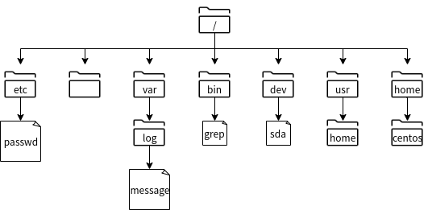
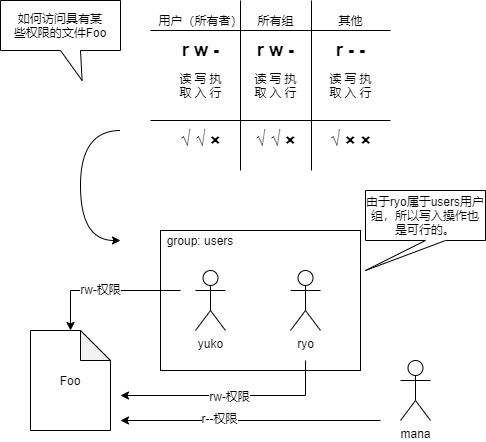
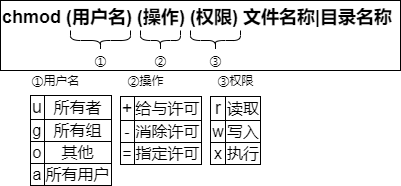
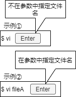
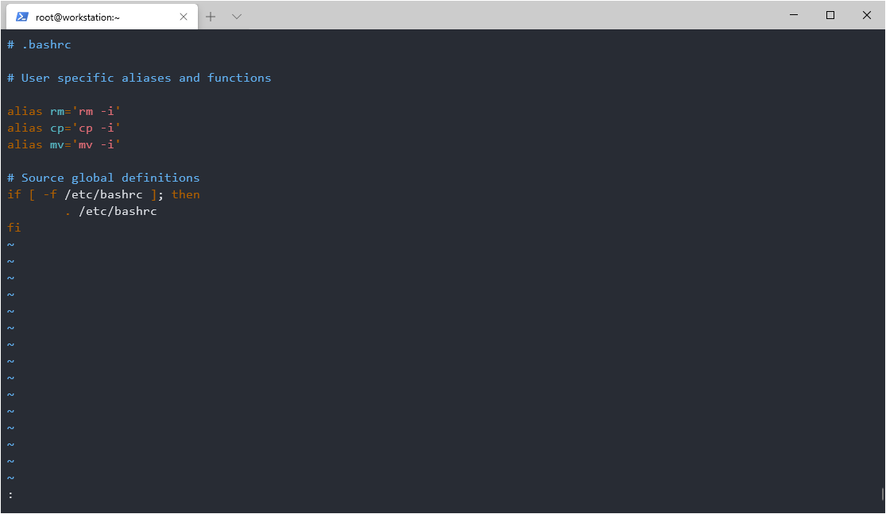
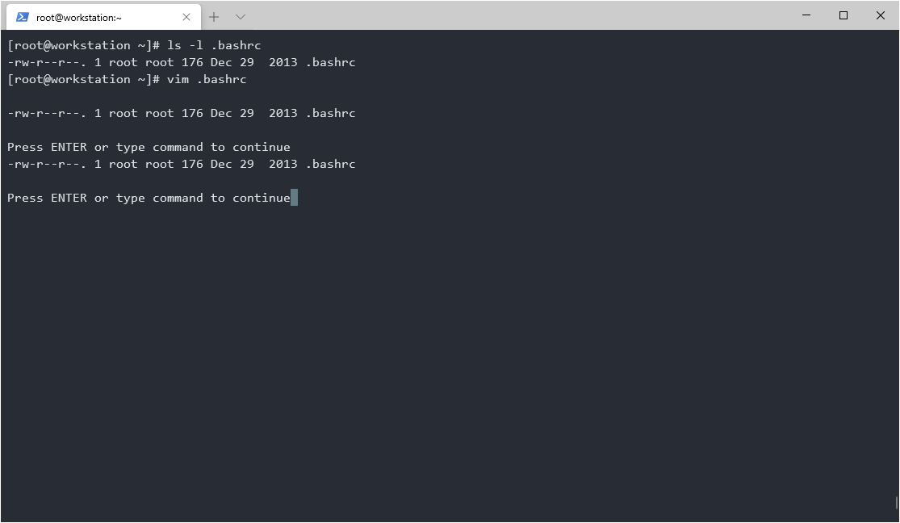
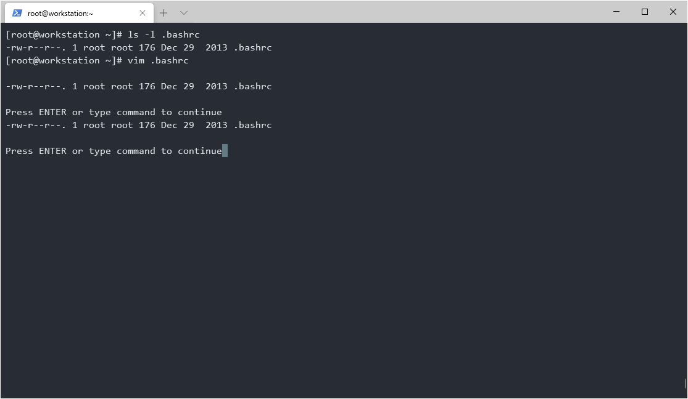

第三章 文件的操作与使用¶
3.1 了解Linux目录结构¶
树状结构与各目录的作用¶
FHS（Filesystem Hierarchy Sttandard）是规定目录结构标准的规范。在多数Linux发行版中，都以FHS为基础进行目录和文件的配置。
在FHS中，除了定义目录名称之外，还规定了各目录的作用、包含的文件的种类、文件的配置等。因此，通过理解FHS中提倡的规范目录结构，可以掌握Linux中常用的必要的文件所在位置，新建的配置文件的放置位置。
此外，在FHS中，可以通过“可共享”(Shareable)、“不可共享”(Unshareable)、“静态”(Static)或“可变更”（Variable）来分配要放置文件的目录。
分类 |
说明 |
|---|---|
可共享 |
可通过网络共享的文件，例如应用程序、库等 |
不可共享 |
无法通过网络共享的文件，例如锁定文件等 |
静态 |
除了系统管理员的操作，其他操作不能变更的文件。例如二进制命令、库、文档等 |
可变更 |
系统运行中可变更的文件，例如日志文件、登录用户的信息文件、锁定文件等 |
可共享 |
不可共享 |
|
|---|---|---|
静态 |
/usr /opt |
/etc /boot |
可变更 |
/var/mail /var/spool/news |
/var/run /var/lock |
例如，/var作为系统运行中的文件可被更新、追加、删除的目录。在/var/mail目录下，每个用户都相对应有一个文件。另外，/var/lock 是为了在文件的读写等过程中进行排他控制而指定使用的目录。
FHS是以根(/)为起点的单一的树状结构目录，“/”下配置了与目录相对应的目录层级。
主要的目录和作用如下表所示：
目录 |
作用 |
|---|---|
/ |
相当于文件系统定点的目录 |
/bin |
一般用户、管理者使用的命令（可执行二进制文件）所在目录 |
/dev |
放置设备配置文件的目录，此目录下的文件由系统引导时检查连接的设备并自动创建 |
/etc |
用于管理系统的配置文件和各种软件的配置文件的目录 |
/lib |
为/bin和/sbin目录下的命令和程序提供可利用的库的目录 |
/lib/modules |
存放内核模块配置的目录 |
/media |
数据目录，如CD/DVD |
/opt |
在Linux安装完成后，此目录可以部署额外安装的软件包（软件） |
/proc |
该目录存储运行内核和进程保留的信息，由于是虚拟文件系统，所以文件并不存在 |
/root |
root用户的主目录 |
/sbin |
该目录主要存放由系统管理员使用的命令，但根据额外选项一般用户也可以使用 |
/tmp |
配置应用程序或用户使用的临时文件目录 |
/var |
该目录存放在系统运行中各种程序配置发生变化的文件 |
/var/log |
该目录存放系统或程序的日志文件 |
/boot |
该目录存放系统启动时需要的引导加载程序相关的文件和内核镜像 |
/usr |
该目录存放用户共享的数据，例如应用程序、库、命令等 |
/usr/bin |
该目录存放一般用户、管理者使用的命令 |
/usr/lib |
该目录存放各种命令使用的库 |
/usr/sbin |
该目录存放仅系统管理员可使用的命令 |
/home |
一般用户的主目录 |
要查看文件系统中的目录详细信息，请运行“man hier”命令。有关man命令的信息，请参考下面的内容：
# man hier
HIER(7) Linux Programmer's Manual HIER(7)
NAME
hier - description of the filesystem hierarchy
DESCRIPTION
A typical Linux system has, among others, the following directories:
/ This is the root directory. This is where the whole tree starts.
/bin This directory contains executable programs which are needed in single user mode
and to bring the system up or repair it.
/boot Contains static files for the boot loader. This directory holds only the files
which are needed during the boot process. The map installer and configuration
files should go to /sbin and /etc. The operating system kernel (initrd for exam‐
ple) must be located in either / or /boot.
/dev Special or device files, which refer to physical devices. See mknod(1).
/etc Contains configuration files which are local to the machine. Some larger software
packages, like X11, can have their own subdirectories below /etc. Site-wide con‐
figuration files may be placed here or in /usr/etc. Nevertheless, programs should
always look for these files in /etc and you may have links for these files to
/usr/etc.
...省略...
当显示文件的保存位置时，目录和其下面的目录之间，通常是使用“/”（斜杠）进行划分。例如在图 3-1-1 中，var目录下的log目录下的messages文件，其保存位置表示为“/var/log/messages”。
另外，将表示这样的文件位置的信息称为路径。
命令提示符¶
登录到Linux的用户将位于目录结构中的当前用户的主目录位置。然后，用户就可以使用命令执行某些操作。您可以在屏幕上的命令提示符中查看您当前所在的路径。例如，以下示例将提示您登录的是CentOS主机：
[用户名@主机名 当前位置的提示符号]
如果你使用root用户登录：
[root@centos ~]#
如果你使用centos用户登录：
[centos@centos ~]$
在“@”符号前是当前用户名，“@”符号后是当前的主机名称，一般主机名称后都会有“~”符号表示当前路径位于当前用户的主目录。
主目录是分配给各用户的作业空间。虽然用户在自己的主目录中可以随意的读写文件，但是在其他用户的主目录中，只要没有被其他用户赋予权限，就不能进行读写文件。但是由于root用户具有管理员权限，所以也只有它可以在所有用户的主目录进行读写文件。
如果要执行任何操作，请在显示的命令提示符下输入需要执行的命令。以下是以root用户身份登录到主机“centos”并运行 pwd 命令的执行过程。pwd命令显示用户当前所在的路径。请注意，root用户的提示符为“#”。
[root@centos ~]# pwd ➜ root用户执行
/root ➜ 当前所在目录位置，为/root目录。
下面是普通用户“centos”登录并运行pwd命令的示例。注意，一般用户的提示符为“$”。
[centos@centos ~]$ pwd ➜ centos用户执行
/home/centos ➜ 当前所在目录位置，一般为 /home 目录下加上用户名组成的路径。
注解
在本书中，许多命令执行时都会省略命令提示符的部分内容，仅以“#”或“$”显示。不过这也能表示您使用的是 root 用户或普通用户。
在 linux 上使用的命令可由普通用户执行，即也可以由无管理员权限的用户执行。
root用户具有管理员权限，但普通用户可以根据需要添加权限。本书尽可能让普通用户执行不需要管理员权限的操作。此外，如果您需要管理员权限，则使用root用户执行命令。
请注意，如果要在登录状态下切换到其他用户或管理员（root），请使用su命令。
su [可选选项] [-] [用户名称]
如果省略用户名，则默认为root。如果不再用户名前使用“-”，则只切换用户，并且登录环境所在目录仍为上一个用户所在目录位置且bash环境也不变。使用“-”可切换用户并使用新用户的环境。
可以使用id命令查看当前用户的所在的有效用户ID与有效组ID。在以下示例中，运行时环境保持为用户zhangsan，并切换为用户lisi。
[zhangsan@centos ~]$ id
uid=1000(zhangsan) gid=1000(zhangsan) groups=1000(zhangsan),100(users)
... 省略 ...
[zhangsan@centos ~]$ su - lisi
密码：
上一次登录：Mon Jan 13 17:28:33 CST 2020从 58.246.147.26pts/0 上
[lisi@centos ~]$ id
uid=1001(lisi) gid=1001(lisi) groups=1001(lisi),100(users)
... 省略 ...
[lisi@centos ~]$ pwd
/home/lisi
另外，对于 Ubuntu，普通用户可以通过“sudo su -” 切换root用户。
自定义命令提示符¶
在bash中，shell变量PS1定义为命令提示符，如第二章中所述。PS2还可以定义为辅助提示符。辅助提示符表示命令尚未完成，并且是连续输入命令时。
以下示例使用辅助提示符：键盘输入 ls -la /etc/passwd 后，请在行尾输入“\”以转义换行符。然后可以继续输入，PS2的默认值为“>”。
$ ls -la /etc/passwd \
> /etc/shadow
-rw-r--r-- 1 root root 1198 Dec 18 19:14 /etc/passwd
---------- 1 root root 822 Dec 18 19:14 /etc/shadow
此外，以下示例还显示了如何编辑PS1并自定义命令提示符：
$ PS1='\s-\v\$'
-bash-4.2$ PS1='[\u@\h \w]\$'
[centos@centos ~]$
设置bash命令提示符的默认值，其中“s”是shell的名称，“-”是连字符，“v”是版本，“$”是美元符号。
修改后的命令提示符为“-bash-4.2 $”。之后我们再修改命令提示符显示为“[当前用户名@当前主机名 目录]$”，其中相对应的参数的值，“[”是起始方括号，“u”是当前用户名，“h”是当前主机名，“@”是一个at符号，“w”是当前所在的目录，“]”是结束方括号。
最终我们看到的命令提示符为“[centos@centos ~]$”
因为这是在当前运行的bash中设置的，所以退出此用户环境后此配置将会消失。需要在下次启动bash时或注销再登录bash时也能生效，请参考第四章内容，通过在“~/.bashrc”或“~/.bash_profile”中添加来实现。
离线文档¶
在linux上，有多种命令可供用户使用。离线文档可帮助您了解如何使用命令。离线文档可以打印出命令和文件相关的说明。
要查看离线文档，可以使用man命令。
man [选项] [章节编号] 命令名称|文件名称等
选项 |
说明 |
|---|---|
-f |
显示在所有手册中的章节中找到的与指定关键字相匹配的内容 |
-k |
显示包含指定关键字的文档的章节 |
注解
在man命令格式中带有“|”参数表示您必须指定其中一个参数，例如“命令名称”或“文件名称”。
如果手册页太长而无法完整的打印在屏幕上，则man命令在打印一个屏幕后会停止打印。因此，要在滚动屏幕打印，请按下列键：
键盘操作 |
说明 |
|---|---|
space |
显示下一页 |
Enter |
显示下一行 |
b |
显示上一页 |
h |
显示帮助 |
q |
退出man命令 |
/字符串 |
查找字符串（使用“n”键查找下一个） |
另外，由于离线文档中有很多项目，因此可能会分为章节或部分。
部分 |
说明 |
|---|---|
1 |
使用说明 |
2 |
系统调用 |
3 |
程序库 |
4 |
设备文件 |
5 |
文件格式 |
6 |
解决方法 |
7 |
其他 |
8 |
系统管理命令 |
在联机文档中，具有相同名称的文档可能位于不同的章节（部分）中。例如：
$ man passwd ➜ ①
... 省略打印内容 ...
$ man -f passwd ➜ ②
passwd (5) - 密码文件
passwd (1) - 更改用户密码
passwd (1ssl) - compute password hashes
①在运行man命令时，指定要查看passwd命令。在这种情况下，将显示passwd命令的离线文档，因为它是在不添加任何选项的情况下选定的。
②指定了“-f”选项。因此，查找并显示所有包含关键字“passwd”的章节（部分）。请注意，passwd命令位于第一章节，而记录用户账户内容信息的passwd文件位于第五章节。如果要查看第五章节passwd文件的离线文档，请执行以下操作：
$ man 5 passwd
... 省略打印内容 ...
3.2 管理文件和目录¶
在命令行中处理文件和目录¶
在命令行中操作文件系统中的文件和目录时，需要了解如何管理这些文件和目录以及管理文件系统的常用命令。
在 Linux 系统中执行操作时，用户必定在文件系统的某个目录位置中。我们一般将当前所处的目录称为当前目录。下图中“zhangsan”是用户zhangsan的初始目录，下面将其作为的那个前目录进行介绍。

切换目录¶
cd命令用于在文件系统上切换目录。
cd [目录]
目录可以是绝对路径，也可以是相对路径。绝对路径从根目录（/）开始，并以斜杠（/）分隔所需目录的路径。此外，相对路径从当前目录，表示所需目录的路径。你可以使用以下目录符号：
符号 |
说明 |
|---|---|
~ |
初始目录，表示当前执行用户的工作目录。 |
. |
当前目录，表示当前执行用户的所处的目录。 |
.. |
父目录，以当前目录为准，表示上一级目录。 |
在图3-2-1中所示的当前所在路径为用户工作目录“/home/zhangsan”，①②③分别表示切换到不同的目录下。如何使用绝对路径或相对路径切换到相同的路径，参考下表。
编号 |
绝对路径 |
相对路径 |
|---|---|---|
① |
cd /home |
cd .. |
② |
cd /opt |
cd ../../opt |
③ |
cd /home/zhangsan/dir_b |
cd dir_b |
除此之外，如果登陆用户为 zhangsan，无论当前在哪个目录下，使用“cd”，“cd ~”，“cd ~zhangsan” 都将切换到用户工作目录“/home/zhangsan”。但是如果zhangsan用户使用命令“cd ~lisi”，也同样可以切换到用户lisi的工作目录下，但是必须拥有用户lisi工作目录的读写权限才可访问。
显示目录路径¶
pwd命令以绝对路径显示当前用户所处的目录位置。
查看文件和目录信息¶
ls 命令列出文件和目录信息。如果没有指定目录名称，则默认会列出当前目录的内容。
ls [选项] [目录名...]
ls [选项] [文件名...]
选项 |
说明 |
|---|---|
-F |
显示表示文件类型符号：“/”是目录，“*”是可执行文件，“@”是链接符号 |
-a |
显示隐藏文件（文件名以点“.”开头） |
-l |
显示详细信息 |
-d |
显示当前目录的信息，而不是当前目录下的内容 |
注解
由于在使用ls命令时，我们可以指定多个文件或目录，因此上面的命令格式中我们使用“…”来表示多个文件或目录。在之后的内容中也会使用相同的表示方法。
$ cd /usr ➜ 表示移动到目录/usr
$ ls ➜ 表示查看目录/usr下的内容
bin etc games include lib lib64 libexec local sbin share src tmp
查看文件内容¶
cat命令可以显示指定名称的文件的内容。如果指定了多个文件，则会连续显示所有文件。此外，使用“-n”选项会在输出时添加行号。
如果执行cat命令时没有指定任何参数，则cat命令将从标准输入（键盘）中读取数据。在键盘中输入一行内容后，按下[Enter]键就会在屏幕上打印出刚刚输入的内容，然后重复进行操作，直到按下[Ctrl+D]结束。
cat [选项] [文件名称...]
选项 |
说明 |
|---|---|
-n |
为所有行添加行号 |
-T |
将制表符显示为“^” |
显示文件内容行首添加行号¶
nl 命令显示带有行号的文件内容。
nl [选项] [文件名]
也可以使用带有“-n”选项的cat命令输出行号。但是，如果包含空行，则显示内容与nl命令有所不同。cat -n 指定包括空行所有行的行号，而“nl”指定除空行以外的行的行号。
$ cat -n sample.txt ➜ 使用 cat 命令显示
1 CentOS
2 Ubuntu
3
4 Mint
$ nl sample.txt ➜ 使用 nl 命令显示
1 CentOS
2 Ubuntu
3 Mint
创建目录¶
mkdir 命令创建目录。通过在命令参数中指定多个目录名称，可以一次创建多个目录。还可以使用“-p”选项创建路径中包含的目录。
mkdir [选项] 目录名称...
选项 |
说明 |
|---|---|
-m [访问权限] |
创建具有明确访问权限的目录 |
-p |
同时创建路径中包含的目录 |
$ mkdir dir_x dir_y ← ❶
$ ls -l
总用量 0
drwxr-xr-x. 2 renkeju renkeju 6 2月 18 13:36 dir_x
drwxr-xr-x. 2 renkeju renkeju 6 2月 18 13:36 dir_y
$ mkdir dir_z/sub_z ← ❷
mkdir: 无法创建目录 “dir_z/sub_z”: 没有那个文件或目录
$ mkdir -p dir_z/sub_z ← ❸
$ ls -l
总用量 0
drwxr-xr-x. 2 renkeju renkeju 6 2月 18 13:36 dir_x
drwxr-xr-x. 2 renkeju renkeju 6 2月 18 13:36 dir_y
drwxr-xr-x. 3 renkeju renkeju 19 2月 18 13:37 dir_z ← ❹
$ cd dir_z/sub_z ← ❺
$ pwd
/home/renkeju/dir_z/sub_z
❶ 一次创建多个目录
❷ 与子目录一起创建，但由于未指定“-p”选项而出错
❸ 使用“-p”选项重试
❹ 已创建 dir_z/sub_z
❺ 切换到 dir_z/sub_z 目录下
创建文件并更改时间戳¶
如果将 touch 命令的参数指定为现有文件名，则会将文件的访问和修改时间更改为 touch 命令的执行时间。此外，如果将参数指定为新文件的名称，则会创建一个新的空文件（大小为0）。
touch [选项] 文件名称...
选项 |
说明 |
|---|---|
-t 时间戳 |
这里的时间戳并不是当前的时间格式，需要遵循 |
-a |
仅变更访问日期和时间 |
-m |
仅变更更新时间 |
$ touch fileA ← 创建新文件
$ ls -l
总用量 0
-rw-r--r--. 1 renkeju renkeju 0 2月 18 13:48 fileA
$ more fileA ← 文件内容为空
$ touch -t 05130900 fileA ← 将时间戳变更为5月13日上午9点
$ ls -l
总用量 0
-rw-r--r--. 1 renkeju renkeju 0 5月 13 2020 fileA
移动文件和目录¶
mv命令移动文件和目录，将源文件（或目录）移动到作为mv命令的最后一个参数指定的目录中，此外，如果mv命令的最后一个参数指定的目录不存在，请提前创建此目录。
mv [选项] 源文件名称... 目标目录名称
mv [选项] 源目录名称... 目标目录名称
选项 |
说明 |
|---|---|
-i |
如果目标目录中存在同名文件，请确认覆盖 |
-f |
强制覆盖目标目录中的同名文件 |
复制文件和目录¶
要复制文件或目录，请使用cp命令，如果要复制同一个目录或另一个目录的文件，并且要复制到另一个目录中，则源文件和目标文件可以具有相同的名称。您也可以同时复制多个文件。
使用cp命令复制目录时，需要使用“-R”（或“-r”）选项。
cp [选项] 源文件名称 目标文件名称
cp [选项] 源文件名称... 目标目录名称
cp [选项] 源目录名称 目标目录名称
选项 |
说明 |
|---|---|
-i |
如果目标目录中或目标文件存在同名文件，请确认是否覆盖 |
-f |
强制覆盖目标目录中或目标文件的同名文件 |
-p |
复制信息，包括所有者、时间戳和访问权限 |
-R,-r |
原样复制源目录的层次结构 |
$ cp fileA fileB ← ❶
$ cp dir_x dir_xx ← ❷
cp: 未指定 -r；略过目录'dir_x'
$ cp -r dir_x dir_xx ← ❸
$ ls -l
总用量 0
drwxr-xr-x. 2 renkeju renkeju 6 2月 18 13:36 dir_x
drwxr-xr-x. 2 renkeju renkeju 6 2月 18 14:15 dir_xx ← ❹
drwxr-xr-x. 2 renkeju renkeju 6 2月 18 13:36 dir_y
drwxr-xr-x. 3 renkeju renkeju 19 2月 18 13:37 dir_z
-rw-r--r--. 1 renkeju renkeju 0 5月 13 2020 fileA
-rw-r--r--. 1 renkeju renkeju 0 2月 18 14:15 fileB ← ❺
❶ 复制文件
❷ 尝试复制目录，但由于未指定“-r”选项而出错
❸ 使用“-r”选项重试
❹ 已创建目录“dir_xx”
❺ 步骤❶中创建的“fileB”文件
删除文件和目录¶
使用rm命令删除文件和目录。也可以通过指定多个文件名称一次性删除多个文件。也可以使用“-R”（或“-r”）选项删除目录和目录中的所有文件。还提供rmdir命令删除空目录的命令。
rm [选项] 文件名称...
rm [选项] 目录名称...
选项 |
说明 |
|---|---|
-i |
删除文件前询问用户是否执行操作 |
-f |
不必询问直接强制删除 |
-R,-r |
删除指定目录中的所有文件和目录 |
$ rm dir_xx ← ❶
rm: 无法删除 'dir_xx': 是一个目录
$ rm -r dir_xx ← ❷
$ rm fileB ← ❸
$ ls -l
总用量 0
drwxr-xr-x. 2 renkeju renkeju 6 2月 18 13:36 dir_x
drwxr-xr-x. 2 renkeju renkeju 6 2月 18 13:36 dir_y
drwxr-xr-x. 3 renkeju renkeju 19 2月 18 13:37 dir_z
-rw-r--r--. 1 renkeju renkeju 0 5月 13 2020 fileA
❶ 不带“-r”选项的命令无法删除目录
❷ 可以使用“-r”选项删除目录
❸ 不需要指定选项就可以删除文件
确认文件类型¶
使用file命令可以确定文件类型。
file [选项] 文件名称|目录名称
使用“-i”选项将从MIME类型显示。
$ file foo
foo: ASCII text
$ file bar
bar: symbolic link to `foo`
$ file dir_a
dir_a: directory
$ file zabbix.svg
zabbix.svg: SVG Scalable Vector Graphics image
$ file dir_x.tar.gz
dir_x.tar.gz: gzip compressed data, from Unix, last modified: Thu Feb 20 17:43:25 2020
标准输入输出控制¶
控制从何处接收输入，从何处进行输出被称为“输入输出控制”的使用被分别称为 标准输入 、标准输出 和 标准错误输出 的流（数据流）。
所有进程在启动是都会生成标准输入，标准输出和错误输出，默认情况下，标准输入与键盘相关联，标准输出和标准错误输出与执行命令的终端相关联。
以下示例使用ls命令指定文件“fileA”和不存在的文件“fileX”进行演示。
$ ls fileA fileX
ls: cannot access fileX: No such file or directory ⬅ 标准错误输出
fileA ⬅ 标准输出
上述结果打印在同一终端上，标准输出和标准错误输出均显示在同一个屏幕上。如果要将标准输出切换为“显示”，将标准错误输出切换为输出到“文件”，请使用重定向或文件描述符。
重定向可以使用符号“<”或“>”在目标之间进行切换。文件描述符0表示标准输入，1表示标准输出，2表示标准错误输出，此处0、1和2是在程序执行过程中产生的。如果进程打开其他文件，则文件描述符的使用顺序为：3、4、5……

以下示例使用重定向和文件描述符来控制error文件中仅包含标准错误输出（文件“fileA”为存在文件，文件“fileX”为不存在文件）。
标准输出、标准错误输出重定向示例¶
标准输出、标准错误输出重定向的示例
ls > file1将当前目录的文件列表存储在file1文件中。
ls 1> file2使用“1>”将当前目录的文件列表存储在文件“file2”中。与仅使用“>”相同。
ls /bin >> file1将 /bin 目录中的文件列表追加到file1文件中。
ls 不存在的文件 存在的文件 2> file3仅当ls命令输出错误时，才将标准错误输出存储在文件“file3”中。
ls 存在的文件 不存在的文件 &> both将标准输出和标准错误输出都存储在文件“both”中，同样的结果包括：
ls 存在的文件 不存在的文件 >& bothls 存在的文件 不存在的文件 1> both 2>&1命令1 &> both将命令1的标准输出和标准错误输出都存储在文件“both”中。同样的结果包括为：
命令1 >& both
标准输入重定向示例¶
标准输入重定向的示例
命令1 < file1将文件file1的内容作为标准输入在命令1中执行。捕获的标准输入可用作参数。
命令1 < file1 | 命令2将文件file1的内容作为标准输入在命令1中执行，并将命令1的标准输出作为标准输入传递到命令2。
在第二个示例中，可以使用管道 | 将命令的结果（标准输出）传递给下一个命令的标准输入，以进一步加工数据。
在以下使用管道的示例中，cat命令将文件 /etc/passwd 的内容作为标准输出进行输出，并将其传递给 head 命令以显示前三行（有关 head 命令，请参见下文）。
$ cat /etc/passwd | head -3
root:x:0:0:root:/root:/bin/bash
bin:x:1:1:bin:/bin:/sbin/nologin
daemon:x:2:2:daemon:/sbin:/sbin/nologin
文件输出¶
tee 命令将从标准输入读取的数据输出到标准输出和文件中。
tee [选项] 文件名称
通过执行“-a”选项，可在不覆盖文件的情况下进行追加内容到文件。
在以下示例中，n1命令对 /etc/passwd 文件的内容进行行编号，并通过管道将结果传递给tee命令。tee命令将其存储在文件myfile.txt中，并通过管道传递给head命令。head命令仅将标准输出输出前三行。
$ nl /etc/passwd | tee myfile.txt | head -3
1 root:x:0:0:root:/root:/bin/bash
2 bin:x:1:1:bin:/bin:/sbin/nologin
3 daemon:x:2:2:daemon:/sbin:/sbin/nologin
$ cat myfile.txt
1 root:x:0:0:root:/root:/bin/bash
2 bin:x:1:1:bin:/bin:/sbin/nologin
3 daemon:x:2:2:daemon:/sbin:/sbin/nologin
4 adm:x:3:4:adm:/var/adm:/sbin/nologin
5 lp:x:4:7:lp:/var/spool/lpd:/sbin/nologin
6 sync:x:5:0:sync:/sbin:/bin/sync
7 shutdown:x:6:0:shutdown:/sbin:/sbin/shutdown
8 halt:x:7:0:halt:/sbin:/sbin/halt
9 mail:x:8:12:mail:/var/spool/mail:/sbin/nologin
10 operator:x:11:0:operator:/root:/sbin/nologin
11 games:x:12:100:games:/usr/games:/sbin/nologin
12 ftp:x:14:50:FTP User:/var/ftp:/sbin/nologin
13 nobody:x:99:99:Nobody:/:/sbin/nologin
14 systemd-network:x:192:192:systemd Network Management:/:/sbin/nologin
15 dbus:x:81:81:System message bus:/:/sbin/nologin
16 polkitd:x:999:998:User for polkitd:/:/sbin/nologin
17 sshd:x:74:74:Privilege-separated SSH:/var/empty/sshd:/sbin/nologin
18 postfix:x:89:89::/var/spool/postfix:/sbin/nologin
19 renkeju:x:1000:1000:renkeju:/home/renkeju:/bin/bash
过滤¶
查看提供过滤功能的命令，这些功能可从标准输入接收数据并对数据进行加工，然后将其输出到标准输出。
显示文本文件的第一部分¶
head 命令显示文本文件的第一部分。如果未指定行数，则默认情况下最多显示到第十行。通过使用“-n”选项指定行数，显示从头到第n行的内容（也可以省略“n”，只指定行数）。
head [选项] [文件名称...]
选项 |
说明 |
|---|---|
-n 行数 |
从文件开头处仅显示指定的行数 |
-c 字节 |
指定要输出的字节数 |
显示文本文件的末尾¶
tail 命令显示文本文件的末尾。如果未指定行数，则默认情况下最多显示到倒数第10行。“-f”选项对监视日志文件有使用价值。
tail [选项] [文件名称...]
选项 |
说明 |
|---|---|
-n 行数 |
指定从结尾处开始显示的行数 |
-f |
假设文件的内容在不断增加，并始终尝试继续阅读文件的最后部分。 |
格式转换¶
tr 命令将从标准键盘输入的字符转换为指定的格式，并显示在标准输出的显示器上。
tr [选项] 字符组1 [字符组2]
选项 |
说明 |
|---|---|
-d 字符组1 |
删除匹配到字符组1中的字符 |
-s 字符组1 字符组2 |
在字符组中，把连续重复的字符以单独一个字符表示 |
以下示例中的第一个tr命令将tr命令的第一个参数指定为表示要转换的字符“a,b,c…z”的字母组“a-z”，第二个参数指定为表示转换后的字符“A,B,C…Z”的字母组“A-Z”。然后，从键盘输入“hello”，将其转换为大写的“HELLO”并输出在显示器上。
第2个tr命令使用“-d”选项删除两个字符：“m”和“y”。请注意，您并未删除单词“my”。
$ tr 'a-z' 'A-Z'
hello ⬅ 键盘输入
HELLO ⬅ tr命令输出
[Ctrl]+[d] ⬅ 退出输入
$ tr -d 'my' ⬅ 删除“m”和“y”字符
my name is yuko ⬅ 键盘输入
nae is uko ⬅ tr命令输出
[Ctrl]+[d] ⬅ 退出输入
此外，由于tr命令不允许在参数中指定文件，因此可以使用重定向“<”，“>”从文件读取数据或转换数据后输出到文本文件。
文件内容排序¶
使用 sort 命令对文件内容进行排序（升序）并生成标准输出。默认情况下，按升序排序。如果输入文件是多个文件，请对每个文件中的内容进行排序，然后合并输出文件。
sort [选项] [文件名称...]
选项 |
说明 |
|---|---|
-b |
忽略行首空格 |
-f |
不区分大小写 |
-r |
降序排序 |
$ cat data
ryo
yuko
Ryo
mana
$ sort data
mana
ryo
Ryo
yuko
$ sort -f data
mana
Ryo
ryo
yuko
$ sort -fr data
yuko
ryo
Ryo
mana
合并行¶
join 命令通过读取由参数指定的两个文件来连接具有公共字段的行。必须先按join命令指定的字段对每个文件进行排序。
join [选项] 文件名称1 文件名称2
选项 |
说明 |
|---|---|
-a 文件编号 |
除了通常的输出之外，还输出不能与FILENUM（1表示文件名称1，2表示文件名称2）对应的行。 |
-j 字段 |
指定要合并的字段 |
$ cat data1 data2
01 yuko
02 ryo
03 mana
01 2018/04/05
03 2017/06/12
$ join -j 1 data1 data2
01 yuko 2018/04/05
03 mana 2017/06/12
$ join -j 1 -a 1 data1 data2
01 yuko 2018/04/05
02 ryo
03 mana 2017/06/12
删除重复行¶
uniq 命令从文件（或标准输入）中读取行，删除重复行（相同的连续行）并将器输出到文件（或标准输出）。如果没有指定选项，重复行将合并到第一个找到的行中。在指定要从中输入内容的文件之前，必须先要对每个文件进行排序。指定输出文件后，命令的指定结果将保存到文件中。
uniq [选项] [输入文件 [输出文件]]
选项 |
说明 |
|---|---|
-c |
在行首前输出出现的次数 |
-d |
仅打印重复行 |
-u |
仅打印非重复行 |
下面的示例对文件“data”进行排序，并输出行的出现次数
$ cat data ⬅ 验证“data”文件中的内容
ryo
yuko
ryo
mana
$ uniq data ⬅ 运行uniq命令而不进行排序
ryo ⬅ 不是预期的结果（ryo的记录不是连续的）
yuko
ryo
mana
$ sort data | uniq -c ⬅ 在运行uniq命令之前先对其进行排序。使用“-c”选项显示处次数
1 mana
2 ryo
1 yuko
转换或删除单词¶
sed命令用于逐字转换和删除单词。sed命令用于对输入流（从文件或管道输入）进行文件转换。如果用于管道输入，则可忽略文件名称。
sed [选项] {编辑命令} [文件名称]
编辑命令 |
说明 |
|---|---|
s/字符串/替换字符串/ |
对于每一行，首先将与模式匹配的字符串替换为替换字符串 |
s/字符串/替换字符串/g |
在整个文件中，将匹配模式的字符串转换为替换字符串 |
d |
删除与模式匹配的行 |
p |
显示与模式匹配的行 |
使用“-i”选项可将编辑直接写入文件。在下面的示例中，使用“s”命令根据模式进行替换。
$ cat file ⬅ ①
127.0.0.1 localhost localhost.localdomain localhost4 localhost4.localdomain4
172.18.0.70 user01.localhost user01
172.18.0.71 user02.localhost user02
$ sed 's/user/UNIX/' file ⬅ ②
127.0.0.1 localhost localhost.localdomain localhost4 localhost4.localdomain4
172.18.0.70 UNIX01.localhost user01
172.18.0.71 UNIX02.localhost user02
$ sed 's/user/UNIX/g' file ⬅ ③
127.0.0.1 localhost localhost.localdomain localhost4 localhost4.localdomain4
172.18.0.70 UNIX01.localhost UNIX01
172.18.0.71 UNIX02.localhost UNIX02
① 文件“file”包含字符串“userXX”
② 在每行开头将匹配模式的字符串（user）转换为替换字符串（UNIX）
③ 在整个文件中，将与模式匹配的字符串（user）转换为替换字符串（UNIX）
下面提供其他使用案例。请注意，以下示例中使用的符号“^”或“$”是元角色。稍后做出解释：
sed '1d' file删除文件“file”的第一行
sed '2,5d' file删除文件“file”的第二行到第五行
sed '/^$/d' file删除文件“file”中的空白行
sed 's/$/test/' file将“test”添加到文件“file”的末尾
sed -n '/user01/p' file仅显示文件“file”中包含“user01”的行
检索行中的特定部分¶
cut 命令仅检索文件中行的特定部分
cut [选项] 文件名称
选项 |
说明 |
|---|---|
-c 位置 |
仅显示指定位置的每个字符 |
-b 位置 |
仅显示指定位置的每个字节 |
-d 分隔符 |
与“-f”一起使用以指定字符分隔符。默认为制表符 |
-f 字符编号 |
仅显示指定的字符 |
-s |
与“-f”一起使用，不显示不包含字段分隔符的行 |
$ cat file ⬅ ①
dbus:x:81:81:System message bus:/:/sbin/nologin
polkitd:x:999:998:User for polkitd:/:/sbin/nologin
sshd:x:74:74:Privilege-separated SSH:/var/empty/sshd:/sbin/nologin
postfix:x:89:89::/var/spool/postfix:/sbin/nologin
renkeju:x:1000:1000:renkeju:/home/renkeju:/bin/bash
$ cut -d ':' -f 3 file ⬅ ②
81
999
74
89
1000
$ cut -d ':' -f 1,3 file ⬅ ③
dbus:81
polkitd:999
sshd:74
postfix:89
renkeju:1000
$ cut -c 1-2 file ⬅ ④
db
po
ss
po
re
① 检查文件内容
② 检索第三个字段，分隔符为“:”（冒号）
③ 使用分隔符“:”（冒号）检索第一个字段和第三个字段
④ 从每行的第一个字符到第二个字符
将制表符转换为空格¶
expand 命令将参数指定的文件中的制表符转换为空格。如果未指定选项，则默认设置为每8位为一次。
expand [选项] [文件名称]
选项 |
命令 |
|---|---|
-i |
仅将行首制表符转换为空格 |
-t |
指定要对齐的位数 |
$ $ cat -T data1 ⬅ ①
101^Iyuko^Itokyo
102^Iryo^Iosaka
103^Imana^Ichiba
$ expand data1 ⬅ ②
101 yuko tokyo
102 ryo osaka
103 mana chiba
$ expand -t 2 data1 ⬅ ③
101 yuko tokyo
102 ryo osaka
103 mana chiba
① 运行带有“-T”选项的cat命令时，标签将显示为“^I”。确保每个字段见有一个指标符。
② 默认情况下，将制表符替换为半角空格，以便每列对齐8位数字的空格。
③ 将制表符替换为半角空格，以便每列对其两位数字的空格。在第一行的101行号中，“101”字符之后，如果有两位数，则为一个半角空格。另外，由于yuko有4个文字，所以与下一列（tokyo）之间有两个半角空格。
相反，要将空格转换为制表符，请使用 unexpand 命令相同。
unexpand [选项] [文件名称]
选项 |
说明 |
|---|---|
-a |
转换所有的空格，而不仅仅时第一个空格 |
-t |
指定要替换的制表符宽度 |
$ cat data2 ⬅ ①
101 yuko tokyo
102 ryo osaka
103 mana chiba
$ od -a data2 ⬅ ②
0000000 1 0 1 sp sp sp sp sp y u k o sp sp sp sp
0000020 t o k y o nl 1 0 2 sp sp sp sp sp r y
0000040 o sp sp sp sp sp o s a k a nl 1 0 3 sp
0000060 sp sp sp sp m a n a sp sp sp sp c h i b
0000100 a nl
0000102
$ unexpand -a data2 > data3 ⬅ ③
$ cat -T data3 ⬅ ④
101^Iyuko^Itokyo
102^Iryo^Iosaka
103^Imana^Ichiba
$ od -a data3 ⬅ ⑤
0000000 1 0 1 ht y u k o ht t o k y o nl 1
0000020 0 2 ht r y o ht o s a k a nl 1 0 3
0000040 ht m a n a ht c h i b a nl
0000054
① 使用 cat 命令检查文件内容
② cat 命令无法确定包含多少空格，因此使用 od 命令进行确认。第一行中“101”后记录了“sp”，这意味着有5个SP（半角空格）。
③ 将空格转换为制表符。使用重定向将转换后的数据写入文件“data3”
④ 使用带有“-T”选项的cat命令验证是否包含“^”（制表符）
⑤ 再次运行 od 命令并确保它是 “ht”（而不是 “sp”）
搜索字符串¶
使用 grep 命令在文本数据中搜索字符串。显示与指定字符串匹配的行。
grep [选项] 要搜索的字符串模式 [文件名称...]
选项 |
说明 |
|---|---|
-v |
显示与模式不匹配的行 |
-n |
显示行号 |
-I |
显示与模式匹配的文件名 |
-i |
搜索不区分大小写 |
以下示例使用grep命令查找文件“file”包含“foo”字符串的行。
$ cat file ⬅ ①
aaa
FOO
bbb
foo
# ccc
foo hello
$ grep -n foo file ⬅ ②
4:foo
6:foo hello
$ grep -ni foo file ⬅ ③
2:FOO
4:foo
6:foo hello
$ grep -v "#" file ⬅ ④
aaa
FOO
bbb
foo
foo hello
① 查看文件以确保除“FOO”和“foo”之外，还有以“#”符号开头的“# ccc”行
② 在文件“file”中搜索字符串“foo”，并使用“-n”选项显示行号。另外，大写的“FOO”不包含在检索结果中。
③ 使用“-i”选项搜索时不区分大小写。搜索结果中包含大写字母“FOO”
④ 在“file”中查看不包含“#”字符的字符串。
正则表达式¶
grep 命令中指定的搜索字符串可以是完整的字符串，如 foo，也可以是正则表达式，正则表达式是将符号和字符串组合起来，制作并检测找到的目标关键词的模式的手段。
下图和示例使用“a”和“^”等符号创建模式。符号称为元字符，每个符号都有其自己的含义。
以下是上图的示例
$ cat fileB
linux01
linux02
android03
android10
linux20
$ grep '^a.*0$' fileB
android10
符号 |
说明 |
|---|---|
c |
匹配字符“c”(其中c不是元字符) |
\c |
匹配字符“c”(其中c是元字符) |
. |
匹配任意字符 |
^ |
行首 |
$ |
行尾 |
* |
前一个字符匹配0个或无数个重复字符 |
? |
前一个字符匹配0个或1个重复字符 |
+ |
前一个字符匹配1个或无数个重复字符 |
[] |
匹配[]中的字符组 |
示例 |
说明 |
|---|---|
[abAB] |
a,b,A或B中的任一字符 |
[^abAB] |
除a,b,A或B以外的任何字符 |
[a-dA-D] |
a,b,c,d,A,B,C或D中的任一字符 |
此外，如果只想将“\”（反斜杠）视为字符。而不是元字符，则可以使用“\”（两个反斜杠）。下面的示例搜索以句号结尾的“android.”：
$ cat fileC
android10
android.
$ grep '^a.*.$' fileC ⬅ ①
android10
android.
$ grep '^a.*\.$' fileC ⬅ ②
android.
① 根据元字符“.$”，表示行的末尾变成以任意的一个字符结尾，所以不能找到与目标相符的结果。
② 元字符“.$”表示查找以句号结尾的行
提供其他使用方式的示例：
grep '.' file显示除空白行以外的所有行
grep '\.' file显示所有包含句号的行
grep '[Ll]inux' file显示所有包含“liunx”，“Linux”的行
grep '^[0-9]' file显示第一个字符为非数字的所有行
grep '^[^#]' file显示除以“#”开头的注释之外的所有行
3.3 权限使用¶
管理文件所有者¶
控制对Linux文件和目录的访问。首先，检查适当的权限或当前所有者的权限。
用户和用户组¶
用户必须至少属于一个组。有两种类型的组：主组和辅助组。用户必须分配一个主组，而辅助组是可选的。
组 |
说明 |
|---|---|
主组（必须的） |
用户刚登陆时的工作组，在创建文件或目录时作为其所属的主组 |
辅助组（可选） |
如有必要，可以指定一个辅助组，可选多个 |
要查看您所属的组，请使用 groups 命令。groups 命令没有选项。如果没有指定用户名，则显示执行命令的用用户的所属组。
groups 用户名称
用户 renkeju 执行groups 命令的示例显示“所属组”的结果。
$ groups
renkeju wheel docker
在示例②中现实的所属组时root用户执行的结果。
$ groups ⬅ ①
root
$ groups renkeju ⬅ ②
renkeju : renkeju wheel docker
① 未指定用户名，因此显示您所属的组
② 由于指定 renkeju 作为用户名，因此显示 renkeju 所属的所有组。
您也可以使用 id 命令来确定您是从哪个用户登录的，以及属于哪个组。
id [选项] [用户名]
以下是 root 执行 id 命令的示例：
$ id
uid=0(root) gid=0(root) groups=0(root)
$ id renkeju
uid=1000(renkeju) gid=1000(renkeju) groups=1000(renkeju),10(wheel),995(docker)
为用户的组指定用户ID（uid）和组ID（gid）以进行标识。如上所述结果所示，如果省略了用户名，则显示当前用户的信息。如果指定了用户名，则还会显示该用户的信息。用户“renkeju”被指定uid为1000。此外，主组为“renkeju”，gid为1000。请注意，id命令也显示辅助组的信息。
权限¶
您可以分别为每个文件或目录设置“允许谁”和“执行什么操作”。这可以称为权限。可以使用 ls -l 命令检查设置的权限。

权限显示的内容分为以下几类：

① 文件类型（这表示文件类型，而不是权限本身，主要类型如下表所示）
② 对用户（所有者）的权限
③ 所有组的权限
④ 其他用户的权限
类型 |
说明 |
|---|---|
普通文件 |
|
d |
目录 |
i |
符号链接 |
此外，“rw-”表示允许执行哪些操作。在“r”,“w”,“x”这些操作类型中，标识为“-”表示此操作不被允许。
下图显示了文件“Foo”的访问权限。“-rw-rw-r–”允许用户yuko读写普通文件。由于所有组是users，因此属于users的其他用户可以读写。也就是说，用户ryo可以读写。请注意，不属于 users 组的其他用户（在本例中的mana）只能读取。
此外，“r”、“w”、“x”的含义因文件或目录而异。
类型 |
对于文件 |
对于目录 |
|---|---|---|
读取权限（r） |
more，cat和cp等命令可用于读取文件内容 |
可以执行ls命令，例如查看目录内容 |
写入权限（w） |
可用于编辑文件内容，例如vi |
可使用mkdir、touch、rm等创建和删除目录中的文件和目录 |
执行权限（x） |
可执行文件 |
可以使用cd命令切换到此目录 |
请注意，目录的执行权限。使用cd命令从其他目录中移动时，如果该目录没有执行权限，则无法移动该目录。
变更权限¶
可以使用 chmod 命令更改现有文件或目录的权限设置，只有所有者或root能更改。
chmod [选项] 模式 文件名称|目录名称
如果指定了“-R”选项，则权限将递归变更，包括子目录。在命令参数中可以指定两种模式：符号模式与八进制模式。
符号方式¶
使用字符或符号变更权限。使用以下符号或字符：
请参考下方示例：文件“mypg”的当前权限为“rw-rw-r–”。将其更改为“所有用户都可以读取和执行，只有所有者可以写入”的权限。文件的所有者为用户renkeju。
$ ls -l ⬅ 检查权限
-rw-rw-r--. 1 renkeju renkeju 0 Feb 23 23:03 mypg
$ chmod a+x,g-w mypg ⬅ 在符号模式下更改权限
-rwxr-xr-x. 1 renkeju renkeju 0 Feb 23 23:03 mypg
“a+x”表示“a”（所有用户）“+”（添加许可）具有“x”（可执行）的权限。结果为“所有用户都可以读取和执行”。此外，“g-w”表示所有者当前给予许可“w”（写入）的权限，因此不做更改，但所有组的“w”（写入）被“-”（消除许可），其最终结果是“只有所有者才能写入”。
八进制方式¶
使用八进制数字更改所需的权限。每个权限都有自己的编号。

也就是说，如果“rwx”全部被赋予权限，则为“7”，如果仅为“r”,则为“4”。在八进制模式下，通过组合此数字来指定权限。
如果将之前的符号模式的示例换成使用八进制模式操作：
$ ls -l mypg
-rw-rw-r--. 1 renkeju renkeju 0 Feb 23 23:20 mypg
$ chmod 755 mypg
$ ls -l mypg
-rwxr-xr-x. 1 renkeju renkeju 0 Feb 23 23:20 mypg
umask值¶
当用户创建新文件或目录时，会被赋予缺省权限。用户的默认权限由在shell变量中设置的umask值来确定。
使用umask命令查看当前设置的umask值。也可以通过更改umask值来更改默认使用的文件和目录权限。
umask [值]
以下结果时以用户renkeju和root的身份运行umask命令的示例。
$ umask
0002
# umask
0022
上面的示例以四位数字格式显示。本手册介绍了可实际用作umask值的后三位数。
所创建文件的权限是由创建文件的应用程序所指定的权限与每个进程在内核中保留的umask的值进行取反之和。umask值是指不希望为应用程序指定的权限按照“用户”、“组”、“其他”的方式分配权限。通常，应用程序创建时具有权限，允许您根据所创建的文件类型执行所有从操作。因此，如果umask值为002，则创建的文件和目录的缺省权限如下表所示。此外，umask值可以从父进程传递到子进程。
文件 |
目录 |
|
|---|---|---|
创建时由应用程序指定的权限 |
666 rw-rw-rw- |
777 rwxrwxrwx |
umask值 |
002 ——-w- |
002 ——-w- |
默认权限 |
664 rw-rw-r– |
775 rwxrwxr-x |
在下面的示例中，典型用户 renkeju 创建了一个新文件和目录，并检查其权限。
$ umask
0002
$ touch fileB
$ mkdir dirB
$ ls -l
total 2
drwxrwxr-x. 2 renkeju renkeju 6 Feb 23 23:35 dirB
-rw-rw-r--. 1 renkeju renkeju 0 Feb 23 23:35 fileB
umask 命令不仅可以显示当前umask值，还可以更改当前umask值。
$ umask
0002
$ umask 026
$ umask
0026
$ touch fileC
$ ls -l fileC
-rw-r-----. 1 renkeju renkeju 0 Feb 23 23:37 fileC
在上面的示例中，更改umask值后将创建一个新文件。如果您查看fileC的权限，则会发现它是“rw-r—–”。”rw-“为“420”，八进制的“6”.“r–”为“400”，八进制得“4”。“—”为“000”，八进制得“0”。换句话说，如果将umask值更改为“026”，则新创建的文件的默认权限将从“664”更改为您所看到的“640”。
注解
umask命令中的更改仅适用于已进行更改的shell及其子进程。如果要修改其作为默认设置，则必须使用shell配置文件进行更改。
更改文件所有者和组¶
使用 chown 命令更改指定文件的所有者和组，此命令仅适用于root用户指定新的用户名作为文件或目录的所有者。
chown [选项] 用户名[.组名] 文件名称|目录名称
如果使用“-R”选项指定目录，则权限会以递归的方式变更，包括子目录。
如果不仅要更改所有者，还要更改组，请将chown命令的参数指定为“更改的所有者的名称.更改的用户组的名称”。组名必须以“.”（点）或“:”（冒号）开头。如果使用 chown 命令只更改组，请指定“chown :更改的用户组的名称 文件名称”而不必指定用户名。
以下示例中，所有者更改了文件renkeju，root更改了所有者和组。只有root才能更改所有者。
# ls -l fileA fileB
-rw-rw-r--. 1 renkeju renkeju 0 Feb 23 23:56 fileA
-rw-rw-r--. 1 renkeju renkeju 0 Feb 23 23:56 fileB
# chown ryo fileA ⬅ ①
# chown ryo.users fileB ⬅ ②
# ls -l
-rw-rw-r--. 1 ryo renkeju 0 Feb 23 23:57 fileA
-rw-rw-r--. 1 ryo users 0 Feb 23 23:57 fileB
① 将文件“fileA”的所有者从renkeju更改为ryo
② 将文件“fileB”的所有者从renkeju更改为ryo，将组从renkeju更改为users
此外，还有一个 chgrp 命令，用于仅修改用户组。与 chown 不同，即使不是 root 用户，属于该组的用户也可以执行此操作。请注意以下事项：
root 可以修改组，包括所有者不是自己的文件也可以修改。另外，变更对象的组名，即使时自己不属于的组也可以指定。
一般用户只能由所有者更改自己的所属组。另外，变更对象的组名只能指定自己所属的组。
chgrp [选项] 组名称 文件名称|目录名称
如果在目录中指定了“-R”选项指定目录，则权限会以递归的方式变更，包括子目录。
$ ls -l fileA
-rw-rw-r--. 1 renkeju renkeju 0 Feb 23 23:56 fileA
$ chgrp docker fileA
$ ls -l fileA
-rw-rw-r--. 1 renkeju docker 0 Feb 23 23:56 fileA
创建链接¶
链接类似于Microsoft Windows 中的快捷方式，允许同一个文件具有两个不同的名称。因此，它指向的不是数据的拷贝，而是相同的数据。由两种类型的链接：硬链接和符号链接。在这两种情况下，都使用ln命令创建链接。
ln 原始文件名称 链接名称
ln -s 原始文件名称 链接名称
创建硬链接¶
以下示例将fileY创建为文件fileX的硬链接。这相当于使用cat命令显示每个内容，它们还使用相同的inode编号。要查看inode，请将ls命令与i选项一起使用。
$ ls fileX
fileX
$ ln fileX fileY ⬅ 创建硬链接
$ cat fileY ⬅ 查看“fileY”文件的内容
hello
$ cat fileX ⬅ 查看“fileX”文件的内容
hello
$ ls -li file* ⬅ 检查 inode
1241225 -rw-rw-r--. 2 renkeju renkeju 6 Feb 24 09:43 fileX
1241225 -rw-rw-r--. 2 renkeju renkeju 6 Feb 24 09:43 fileY
此外，以下示例还使用rm命令删除了文件“fileX”。但是，由于inode未被删除，因此您仍然还可以访问到链接“fileY”文件中的数据。
$ rm fileX
$ cat fileY
hello
您不能为目录创建硬链接。以下示例验证在尝试创建目录的硬链接时是否会出现错误。
$ ls -ld mydir
drwxrwxr-x. 2 renkeju renkeju 6 Feb 24 09:54 mydir
$ ln mydir mydir_link
ln: ‘mydir’: hard link not allowed for directory
硬链接具有以下特性：
链接使用与原始文件相同的inode编号
无法基于目录创建链接
由于inode编号在同一文件系统中是唯一编号，因此无法为不同的分区创建硬链接
创建符号链接¶
以下示例创建了符号链接，但请确保使用了不同的inode编号，并且在运行 ls -l 时，符号链接文件显示为“链接名称 -> 原始文件名称”，并且权限的开头显示符号链接文件的文件类型为“l”。
此外，请注意，如果删除原始文件（fileX），则会导致错误，因为链接本身没有引用（原始文件的位置）。
$ rm fileX
$ cat fileY
cat: fileY: No such file or directory
您也可以创建指向目录的符号链接。下面的示例创建目录的符号链接：
$ ls -ld mydir
drwxrwxr-x. 2 renkeju renkeju 6 Feb 24 09:54 mydir
$ ln -s mydir mydir_link
$ ls -ld mydir*
drwxrwxr-x. 2 renkeju renkeju 6 Feb 24 09:54 mydir
lrwxrwxrwx. 1 renkeju renkeju 5 Feb 24 10:07 mydir_link -> mydir
符号链接的特点如下：
链接使用的inode与原始文件具体的编号不同
可以基于目录创建链接
可以链接到原始文件和其他分区
权限以文件类型“l”开头，表示符号链接
查找命令和文件¶
Linux提供了许多用于搜索的命令，根据搜索的用途使用不同命令。
查找文件¶
find命令在指定目录下查找符合指定搜索条件的文件。find可以利用表达式来指定各种条件。表达式由选项、条件表达式和操作组成。如果省略路径和表达式，则显示当前目录下的所有文件/目录。以下时一些使用案例：
find [路径] [公式]
公式 |
说明 |
|---|---|
-name |
按指定的文件名搜索 |
-type |
按文件类型搜索。主要类型如下：d（目录）、f（常规文件）、l（符号链接） |
-size |
按指定块大小搜索 |
-atime |
根据指定的日期和时间搜索上次访问的文件 |
-mtime |
根据指定的日期和时间搜索上次更新的文件 |
标准输出搜索结果 |
|
-exec command ; |
搜索后执行命令（command） |
find . -name core在当前目录下搜索名为“core”的文件
find / -mtime 7在“/”目录下，查找7天前上次更新的文件
find / -mtime +7在“/”目录下，查找7天以上上次更新的文件
find / -atime -7在“/”目录下，查找最近7天以内访问的文件
find . -type l在当前目录搜索符号链接
在第二个和第三个示例中，使用“-mtime”可以基于上次更新的日期和时间进行查找，使用“-atime”可以基于上次访问的日期和时间进行查找。另外，在指定日期和时间时，数字前可以有“什么都不加”、“+”和“-”三种方式。
以下示例演示了如何在CentOS中结合使用find和xargs命令。当前目录中有一个目录和两个常规文件。尝试使用find和xargs命令搜索此目录并删除文件，但出现错误，因为“file B”文件名称中包含空格。
$ ls
dirA fileA file B
$ find . -type f | xargs rm
rm: cannot remove ‘./file’: No such file or directory
rm: cannot remove ‘B’: No such file or directory
$ ls
dirA file B
xargs 命令读取由空格或换行符分隔的字符串。因此，在上面的示例中，“fileB”被拆分为“file”和“B”，作为xargs的标准输入读取，并显示一条错误信息，只是rm命令无法找到要删除的文件。以下示例说明如何查找包含空格的文件名并将其传递给xargs：
$ find . -type f -print0 | xargs -0 rm
$ ls
dirA
find命令在运行时提供“-print0”作为表达式。使用“-print0”可以在文件分隔符中嵌入空字符，而不是空格或换行符。此外，xargs命令中的“-0”选项从标准输入中读取字符串，并将空字符作为分隔符，而不是空格。因此，也可以删除上述包含空格的文件。因此，“-print0”与xargs命令的“-0”选项相对应。
文件索引搜索¶
locate 命令搜索文件的方式与find命令相同。在命令参数指定的模式中也可以像shell中使用元字符。此外，如果该字符串是不包含元字符的常规字符串，则必须显示包含该字符串的所有文件名和目录名。
locate [选项] [路径]文件名称|目录名称
$ locate dirA
/home/renkeju/test/dirA
locate命令使用包含文件名称和目录名称的列表的数据库的索引实现快速搜索。但是，如果不更新数据库，每天更新的文件和目录就会排除在搜索范围之外。使用updatedb命令可以更新数据库。
注解
anacron每天运行一次 /etc/cron.daily/mlocate 脚本，并在其中执行updatedb命令。
选项 |
说明 |
|---|---|
-e |
指定不包含在数据库文件列表中的目录路径 |
-o |
指定要更新的数据库名称，用于指定自己创建的数据库 |
注解
CentOS 和 Ubuntu 的默认值均为 /var/lib/mlocate/mlocate.db
如果要使用updatedb命令从创建的数据库中删除某个目录的索引，则可以使用 updatedb -e 目录名称 命令进行该操作，并在 updatedb 命令的配置文件 “/etc/updatedb.conf” 中配置与该目录相关的配置信息。如果以不带参数的形式运行 updatedb 命令，则为默认使用 /etc/updatedb.conf 配置文件进行更新数据库。
$ cat /etc/updatedb.conf
PRUNE_BIND_MOUNTS = "yes"
PRUNEFS = "9p afs anon_inodefs auto autofs bdev binfmt_misc cgroup cifs coda configfs cpuset debugfs devpts ecryptfs exofs fuse fuse.sshfs fusectl gfs gfs2 gpfs hugetlbfs inotifyfs iso9660 jffs2 lustre mqueue ncpfs nfs nfs4 nfsd pipefs proc ramfs rootfs rpc_pipefs securityfs selinuxfs sfs sockfs sysfs tmpfs ubifs udf usbfs fuse.glusterfs ceph fuse.ceph" PRUNENAMES = ".git .hg .svn"
PRUNEPATHS = "/afs /media /mnt /net /sfs /tmp /udev /var/cache/ccache /var/lib/yum/yumdb /var/spool/cups /var/spool/squid /var/tmp /var/lib/ceph"
“PRUNEFS”列出了构建数据库时不想更新包含的文件系统类型。“PRUNEPATHS”列出了构建数据库时不想更新包含的目录路径。
查找命令¶
which 命令根据环境变量PATH指定的目录查找指定目录的存储目录。环境变量PATH是一个变量，用于保存要使用的程序（命令）的路径。命令将查找在PATH中注册的位置，并在找到相应的文件时执行。也就是说，即使安装了所需的命令，如果PATH中没有该命令的位置，也无法执行该命令（但是，您也可以使用绝对路径指定命令）。
which [选项] 命令名称
选项 |
说明 |
|---|---|
-a |
不仅表示最初发现的，还表示与环境变量PATH一致的所有内容 |
-i |
从标准输入中读取别名并显示匹配项 |
以下示例①显示了如何使用which命令搜索只有root用户可以使用的usermod命令。
# echo $PATH
/usr/local/sbin:/usr/local/bin:/sbin:/bin:/usr/sbin:/usr/bin:/root/bin
# which usermod
/sbin/usermod
在示例②中，搜索一般用户renkeju的$PATH中的usermod命令所在的位置，将会显示一条报错信息：找不到usermod命令。
$ echo $PATH
/usr/local/bin:/usr/bin:/usr/local/sbin:/usr/sbin:/home/renkeju/.local/bin:/home/renkeju/bin
$ which usermod
/usr/bin/which: no usermod in (/usr/local/bin:/usr/bin:/usr/local/sbin:/usr/sbin:/home/renkeju/.local/bin:/home/renkeju/bin)
3.4 使用vi编辑其编辑文件¶
什么是vi编辑器？¶
vi是Bill Joy开发的UNIX标准文本编辑器。您可以使用vi编辑器创建和编辑文件。Linux也提供了与vi兼容的增强功能vim(Vi IMproved)。在最近的RedHat 发行版中，vi是作为vim的基础配置软件包命令或vim的alias（别名）提供的。vim提供多种有用的功能，如语法高亮和屏幕截图等。
vi编辑器启动方式如下图所示：
如果启动vi编辑器时没有指定文件名，请在编辑后使用文件名称保存新文件。此外，如果指定了文件名称，如示例②所示，将打开该文件。如果不存在具体指定名称的文件，则使用该名称创建一个新文件。
vi编辑器在三种模式之间切换：
操作方式 |
说明 |
|---|---|
命令方式 |
输入关键字时，将其视为vi命令。可以移动光标，删除，复制和黏贴文件的行。命令方式时vi的默认方式，在启动后和按下[Esc]键之后进入该模式。 |
输入模式（插入模式） |
键入键盘将字符输入到编辑的文本文件中。 |
末尾行模式 |
保存文档，退出vi编辑器，查找和替换字符串。 |
滚动屏幕（命令模式）¶
启动 vi 编辑器后立即处于命令模式。如果在vi编辑器中打开文件时无法在一个屏幕上查看到所有信息，则按[Ctrl]+[f]可将屏幕向前移动到文件末尾。此外，如果要将屏幕向前移动到文件的开头，请按[Ctrl]+[b]。

用于滚动和移动光标的主要命令包括：
命令 |
说明 |
|---|---|
h 或 ← |
将光标向左移动一个字符 |
j 或 ↓ |
将光标向下移动一个字符 |
k 或 ↑ |
将光标向上移动一个字符 |
l 或 → |
将光标向右移动一个字符 |
0(数字零) |
移动到当前行的开头。注意，“^”符号可以移至除空格之外的第一个字符 |
$ |
移动到当前行的行尾 |
G |
转到最后一行 |
1G |
转到第一行 |
nG |
转到第n行 |
[Ctrl]+[b] |
向文件开头滚动一次屏幕 |
[Ctrl]+[f] |
向文件结尾滚动一次屏幕 |
保存文档，退出vi编辑器（末尾行模式）¶
保存文档，退出vi编辑器，搜索并替换字符串。首先，介绍保存文档并退出vi编辑器。
按[Esc]键:

在末尾行中输入冒号 : ：

输入“:q!”将强制退出，不保存变更内容：
退出命令为“q”。如上图所示中为“q!”，表示不保存正在编辑的内容，直接放弃并退出。
与保存和退出文件相关的主要命令包括：
目的 |
命令 |
说明 |
|---|---|---|
保存 |
:w |
保留文件名称不变 |
:w! |
强制保存而不变更文件名称 |
|
:w 文件名称 |
重命名并保存（或另存为新文件） |
|
退出 |
:q |
退出且不保存文件 |
:q! |
强制退出且不保存文件已经更改的内容 |
|
保存并退出 |
:wq |
同时保存和退出 |
:wq! |
强制保存和退出 |
|
:wq 文件名称 |
修改后并保存（另存为）文件，然后退出 |
|
其他 |
:! ls -l 正在编辑的文件名称 |
在不退出vi的情况下运行命令 |
:e! |
放弃编辑并重新加载文件 |
上表的“其他”中的“:! ls -l 正在编辑的文件名称”可以修改“:!”后所述相应的命令与参数。运行vi编辑器时，您可以在不退出vi的情乱下运行linux命令。在本例中，我们将运行ls命令。
# ls -l .bashrc
-rw-r--r--. 1 root root 176 Dec 29 2013 .bashrc
首先，在命令行中运行ls命令，以检查“.bashrc”的权限。
然后启动 vi 编辑器。因为在 vi 运行期间需要运行“ls -l”命令，所以请从命令模式中选择“:!”后修改相应参数的值。然后可以继续键入Linux命令（本例中为“ls -l .bashrc”）并按[Enter]键。
 

使用文字输入模式（插入模式）¶
从命令模式输入A可切换到输入模式（插入模式），其允许您在文本中输入字符。有几个命令可以进入输入模式（插入模式），比如“A”命令从当前光标所在行的末尾开始输入。我们可以根据相对于光标位置来区分使用不同的命令。
命令 |
说明 |
|---|---|
i |
在光标前插入字符 |
a |
在光标后插入字符 |
o |
在光标行的下方创建一行新行，并从其开头开始插入 |
I |
在光标行的开头插入字符 |
A |
在光标行的末尾插入字符 |
O |
在光标行的上方创建一行新行，并从其开头开始插入 |
以下示例使用“i”命令将User user更改为User Webuser。
删除字符、单词或行（在命令模式下）¶
提供了几种用于删除字符、单词或行的命令。比如使用“dd”命令删除行，也可以使通过指定行数（例如“3dd”）从当前光标位置删除指定的行。
命令 |
说明 |
|---|---|
x |
删除光标前的一个字符 |
dw |
从光标处删除下一个单词 |
dd |
删除光标行 |
nx |
从光标右侧删除n个字符 |
D |
从光标移至行尾 |
ndd |
从光标行向下删除n行 |
dG |
从光标行删除到最后一行 |
dH |
从第一行删除到光标行 |
复制和黏贴字符、单词或行（在命令模式下）¶
提供了几种用于复制和黏贴字符、单词和行的命令。比如使用“yy”可以逐行复制，也可以通过指定行数（例如“3yy”）从当前光标位置复制指定行内容。还可以使用“p”命令进行黏贴，这会将其黏贴到光标行下方的行中。
命令 |
说明 |
|---|---|
yl |
复制单个字符 |
yw |
复制单词 |
yy |
复制光标行 |
nyy |
从光标行复制n行 |
y0 |
从行首复制到光标之前 |
y$ |
从光标位置复制到行尾 |
P（大写） |
如果要复制行，则黏贴到光标行上方的行中；如果要复制字符、单词则黏贴到光标的左侧 |
p（小写） |
如果要复制行，则黏贴到光标行下方的行中；如果要复制字符、单词则黏贴到光标的右侧 |


vi编辑器的设定¶
vi编辑器提供了一些启动时未启用的可用可选功能。您可以设置可选功能或更改默认设置。使用“:set”命令更改可选功能。下面的示例为显示行号：


选项 |
说明 |
|---|---|
:set 选项 |
设置可选功能 |
:set no选项 |
取消激活可选功能 |
选项 |
说明 |
|---|---|
number |
显示行号 |
ignorecase |
不区分大小写 |
list |
显示通常不可见的字符符号，如制表符和行尾符号 |
all |
显示所有选项 |
如果在启动vi编辑器时使用上述选项，则此设置为临时设置。要确保vi编辑器启动时的设置始终相同，请在当前用户的主目录下创建配置文件“.vimrc”并写入配置信息。
以下示例假定renkeju用户的起始目录还没有“.vimrc”，创建配置文件后并配置了显示行号的设置。
$ vi file1
...下面为文件内容...
My name is Keju.
How are you? ⬅ 没有显示行号
...使用“:qw”保存并退出...
$ vi .vimrc ⬅ 创建并编辑“.vimrc”
...下面为文件内容...
set num
...使用“:qw”保存并退出...
$ vi file1
...下面为文件内容...
1 My name is Keju.
2 How are you? ⬅ 显示行号
...使用“:qw”保存并退出...